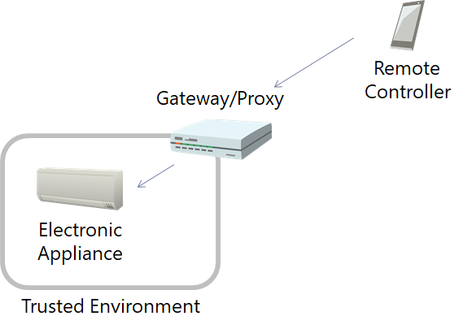
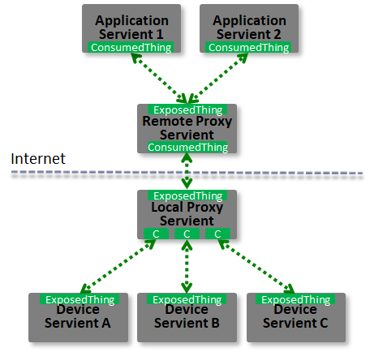
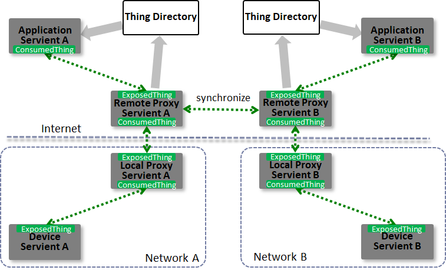

The W3C Web of Things (WoT) was created to enable
interoperability across IoT Platforms and application
domains.
WoT provides mechanisms to formally describe IoT
interfaces to allow IoT devices and services to communicate
with each other, independent of their underlying
implementation, and across multiple networking protocols. In
addition WoT offers a standardized way to define and program
IoT behavior.
This WoT Architecture document describes the abstract
architecture for the W3C Web of Things. It is derived from a
set of requirements that were derived from use cases for
multiple application domains. The architecture can be mapped
onto a variety of concrete deployment scenarios, several
examples of which are given.
The document is focused on the scope of W3C WoT
standardization, which consists of three initial building
blocks. These are described by additional WoT
specifications:
the Web of Things (WoT)
Thing Description [[wot-thing-description]],
the Web of Things (WoT)
Binding Templates [[wot-binding-templates]], and
the Web of Things (WoT)
Scripting API [[wot-scripting-api]].
The optional WoT Binding Templates can be used to
describe multiple protocol bindings, so that a Thing
can communicate with different IoT Platforms (i.e.,
IoT ecosystems or standards).
The optional WoT Scripting API enables implementation of
the application logic of a Thing using a standardized
contract for JavaScript. This simplifies IoT application
development and enables portability across vendors and WoT
network components.
Other non-normative architectural blocks and conditions
underlying the Web of Things are also described in the
context of deployment scenarios. In particular,
recommendations for security and privacy are included in:
the Web of Things (WoT)
Security and Privacy Considerations [[wot-security]],
the Web of Things (WoT)
Security Best Practices [[WOT-SECURITY-BEST-PRACTICES]], and
the Web of Things (WoT)
Security Testing Plan [[WOT-SECURITY-TESTING-PLAN]].
Overall, the goal is to preserve and support existing
security mechanisms and properties. In general, W3C WoT is
designed to describe what exists rather than to prescribe
what to implement.
Please contribute to this draft using the GitHub
Issue feature of the WoT
Architecture repository. For feedback on security and
privacy considerations, please use the WoT
Security and Privacy Issues, as they are cross-cutting
over all our documents.
Introduction
The "Web of Things" (WoT) started as an academic initiative
in the form of publications and, starting in 2010, a yearly
International
Workshop on the Web of Things . Its goal is to improve
interoperability as well as usability in the Internet of
Things (IoT). With the increasing role of IoT services using
other web standards in commercial and industrial
applications, the W3C chartered an Interest Group in
2015 to identify technological building blocks for
Recommendation Track standardization. With the WoT Working Group
chartered end of 2016, the first set of WoT building blocks
has now being standardized:
the Web of Things (WoT)
Thing Description [[wot-thing-description]],
the Web of Things (WoT)
Binding Templates [[wot-binding-templates]], and
the Web of Things (WoT)
Scripting API [[wot-scripting-api]].
This document serves as an umbrella for the W3C WoT draft
specifications and defines the basics such as terminology
and the underlying abstract architecture of the W3C Web of
Things. In particular, the purpose of this document is to
provide:
a set of use cases that lead to the W3C WoT
Architecture in chapter ,
a set of requirements for WoT implementations in
chapter ,
a description of the high level architecture in
chapter
an overview of the WoT building blocks being
standardized and their interplay in chapter ,
a guideline to map the abstract architecture to
software stacks and hardware components in chapter ,
deployment scenarios in chapter ,
and security considerations to be aware of when
implementing WoT building blocks in chapter .
Terminology
This section is normative.
This document uses the following terms as defined here.
The WoT prefix is used to avoid ambiguity for terms that are
defined specifically for Web of Things concepts.
Action
An Interaction Affordance that allows to invoke a
function of the Thing, which manipulates state
(e.g., toggling a lamp on or off)
or triggers a process on the Thing (e.g., dimm a lamp over time).
Application
A running or periodically running process that
consumes one or more Things (read and processes there
data, control their state) and/or exposes one or more
Things (provide access to locally gathered data or
computed from consumed Things, provide remote control
and management interfaces). The application can be
implemented using the Scripting API or native platform
APIs. The application may also be distributed over
multiple Things and other hosts.
Binding
Templates
A re-usable collection of blueprints for the
communication with different IoT platforms. The
blueprints includes the required vocabulary for the
Thing Description to map Interactions to
platform-specific messages as well as implementation
notes for the required protocol stacks or dedicated
communication drivers.
to consume a Thing
To read a Thing Description and create a Consumed
Thing software object for the application in the local
runtime environment.
Consumed Thing
A software abstraction that represents a remote
Thing used by the local application. The abstraction might be
created by a native WoT Runtime, or instantiated
as an object by a Scripting API implementation.
Consumer
An entity that can process the WoT Thing Description format
and interact with Things (i.e., consume Things).
Digital Twin
A digital twin is a virtual representation of a
device or a group of devices that resides on a cloud
server, edge device, or proxy. It can be used to represent
real-world devices which may not be continuously online,
or to run simulations of new applications and services,
before they get deployed to the real devices.
Domain-specific vocabulary
Linked Data vocabulary that can be used in the WoT
Thing Description, but is not defined by W3C WoT.
Edge device
a device which provides an entry point into
enterprise or service provider core networks. Examples
include gateways, routers, switches, multiplexers, and a
variety of other access devices.
Event
An Interaction Affordance that describes an event source,
which asynchronously pushes event data to Consumers
(e.g., overheating alerts).
Execution Environment
A sandbox within the WoT Runtime that isolates scripts
running on the same Servient.
to expose a Thing
To create an Exposed Thing software object in the
local runtime environment that enables the application
to provide local state and calls as Interactions over
the network.
Exposed Thing
A software abstraction that represents a Thing
implemented locally that be accessed over the network by remote
Consumers.
The abstraction might be
created by a native WoT Runtime, or instantiated
as an object by a Scripting API implementation.
Hypermedia Control
A serialization of a Protocol Binding in hypermedia, that is,
either a Web link [[!RFC8288]] for navigation or a Web form for
performing other operations. Forms can be seen as request templates
provided by the Thing to be completeted and sent by the Consumer.
Interaction Affordance
Metadata of a Thing that shows and describes the possible choices to Consumers,
thereby suggesting how Consumers may interact with the Thing.
There are many types of potential affordances, but
W3C WoT defines three types of Interaction Affordances:
Properties, Actions, and Events.
Interaction Model
An intermediate abstraction that formalizes the
mapping from application intent to concrete protocol
bindings, which are used to interact with Web resources.
IoT platform
A specific IoT ecosystem such as OCF, oneM2M, or
Mozilla Project Things with its own specifications for
application-facing APIs, data model, and protocols or
protocol configurations.
Property
An Interaction Affordance that exposes state of the Thing.
This state can then be retrieved (read) and optionally updated (write).
Things can also choose to make Properties observable by pushing the new
state after a change.
Protocol Binding
The mapping from an Interaction Affordance to concrete messages of a specific protocol,
thereby informing Consumers how to activate the Interaction Affordance.
W3C WoT serializes Protocol Bindings as hypermedia controls.
Scripting Runtime
A runtime system that is used for implementing an
API in a scripting language (e.g. using ECMAScript, LUA,
Python etc.).
Servient
A software stack that implements the WoT building
blocks. A Servient can host and expose Things and/or host Consumers that consume Things.
Servients can support multiple Protocol Bindings to enable
interaction with different IoT platforms.
Subprotocol
An extension mechanism to a transfer protocol that
must be known to interact successfully.
TD
Short for Thing Description.
TD Vocabulary
A controlled Linked Data vocabulary by W3C WoT to
tag the metadata of Things in the WoT Thing Description
including communication metadata of WoT Binding
Templates.
Thing or Web Thing
An abstraction of a physical or a virtual entity
whose metadata and interfaces are described by a WoT
Thing Description, whereas a virtual entity is the
composition of one or more Things.
Thing
Description
Structured data describing a Thing. A TD includes
metadata, domain-specific metadata, a list of offered
interactions, the supported protocol bindings for each
interaction, and links to related Things. The Thing
Description is built around a formal Interaction Model.
Thing Directory
A directory service for TDs that provides a Web
interface to register TDs (see [[CoRE-RD]]) and look
them up (e.g., using SPARQL queries or CoRE Link
Format).
Transfer Protocol
The underlying, standardized application layer
protocol without application-specific options or
subprotocol mechanisms.
Virtual Thing
An instance of a Thing that represents a Thing that is located
on another system component.
WoT Interface
The network-facing interface of a Thing
that is described by a Thing Description.
WoT Runtime
A runtime system that maintains an execution
environment for applications, and is able to expose and
optionally consume TDs, offers a protocol binding to one
or more protocols, and maintains private security
metadata.
WoT Scripting API
or the
Scripting API
The application-facing programming interface
optionally provided by a Servient in order to to ease
the implementation of applications running in a WoT
Runtime. It is comparable to the Web browser APIs.
WoT Server
An entity that exposes a network interface
consistent with a WoT Thing Description. WoT Server is
also used to refer to a Servient in server role only.
WoT Servient
Synonym for Servient.
Use Cases
This section presents the application domains and use cases
targeted by the W3C WoT and which are used to derive the
abstract architecture discussed in .
The Web of Things architecture does not put any
limitations on use cases and application domains. Various
application domains have been considered to collect common
patterns that have to be satisfied by the abstract
architecture.
The following sections are not exhaustive. Rather they
serve as illustrations, where connected things can provide
additional benefit or enable new scenarios.
Application Domains
Consumer
In the consumer space there are multiple assets
that benefit from being connected. Lights and air
conditioners can be turned off based on room
occupancy. Window blinds can be closed automatically
based on weather conditions and presence. Energy and
other resource consumption can be optimized based on
usage patterns and predictions.
The consumer use cases in this section includes
Smart Home use case.
shows an example of a
Smart Home. In this case, gateways are connected to
edge devices such as sensors, cameras and home
appliances through corresponding local communication
protocols such as KNX, ECHONET, ZigBee, DECT ULE and
Wi-SUN. Multiple gateways can exist in one home,
while each gateway can support multiple local
protocols.
Gateways can be connected to the cloud through
the internet, while some appliances can be connected
to the cloud directly. Services running in the cloud
collect data from edge devices and analyze the data,
then provide value to users through the edge devices
and other UX devices.
Smart Home
Smart home provides consumer benefits such as
remote access and control, voice control and home
automation. Smart home also enables device
manufacturers to monitor and maintain devices
remotely. Smart home can realizes added value
services such as energy management and security
surveillance.
Industrial
The industrial use cases in this section are
applicable to different industry verticals.
Due to the nature of overlaps in the application
scenarios, different verticals have similar use
cases.
Example: Smart Factory
shows an example
of a Smart Factory. In this case, field-level,
cell and line controllers automate different
factory equipment based on industrial
communication protocols such as Profinet,
Modbus, OPC UA TSN, EtherCAT, or CAN. An
industrial edge device collects selected data
from various controllers and makes it available
to a cloud backend service, e.g. for remote
monitoring via a dashboard or analyzes it for
preventive maintenance.
Smart Factory
Smart factories require advanced monitoring of
the connected manufacturing equipment as well of the
manufactured products. They benefit from predictions
of machine failures and early discovery of anomalies
to prevent costly downtime and maintenance efforts.
Additionally, monitoring of connected
manufacturing equipment and the environment at the
production facility for the presence of poisonous
gases, excessive noise or heat increases the safety
of the workers and reduces the risks of incidents or
accidents.
Real-time monitoring and KPI calculations of
production equipment helps to detect productivity
problems and optimize the supply chain.
Transportation
& Logistics
Monitoring of vehicles, fuel costs, maintenance
needs and assignments helps to optimize the full
utilization of the vehicle fleet.
Shipments can be tracked to be en-route to ensure
consistent quality and condition of the transported
goods. This is especially useful to assert the
integrity of the cold-chain from warehouses to
refrigerated trucks to delivery.
Centralized monitoring and management of stock in
warehouses and yards can prevent out of stock and
excessive stock situations.
Utilities
Automated reading of residential and C&I
(Commercial and Industrial) meters, and billing
offers continuous insights into resource consumption
and potential bottlenecks.
Monitoring the condition and output of
distributed renewable energy generation equipment
enables optimization of distributed energy
resources.
Monitoring and remote-controlling of distribution
equipment helps to automate the distribution
process.
Continuous monitoring of generation and
distribution infrastructure is improving safety of
utilities crew in the field.
Oil and Gas
Offshore platform monitoring, leakage detection
and prediction of pipelines as well as monitoring
and controlling the levels in tanks and reservoirs
helps to improve the industrial safety for the
workforce as well as for the environment.
Automated calculation of a distributed stock
through various storage tanks and delivery
pipes/trucks allows for improved planning and
resource optimization.
Insurance
Proactive Asset Monitoring of high value assets
such as connected structures, fleet vehicles, etc.
mitigates the risk of severe damage and high costs
due to predictions and early detection of incidents.
Usage based insurance can be offered with usage
tracking and customized insurance policies.
Predictive weather monitoring and re-routing
fleet vehicles to covered garages can limit loss due
to hail damage, tree damage.
Engineering
and Construction
Monitoring for industrial safety reduces the
risks of security hazards. Monitoring of assets at
construction site can prevent damage and loss.
Agriculture
Soil condition monitoring and creating optimal
plans for watering, fertilizing as well as
monitoring the produce conditions optimize the
quality and output of agricultural produce.
Healthcare
Data collection and analytics of clinical trial
data helps to gain insights into new areas.
Remote patient monitoring mitigates the risk of
undetected critical situations for elderly people
and patients after hospitalization.
Environment
Monitoring
Environment monitoring typically relies on a lot
of distributed sensors that send their measurement
data to common gateways, edge devices and cloud
services.
Monitoring of air pollution, water pollution and
other environmental risk factors such as fine dust,
ozone, volatile organic compound, radioactivity,
temperature, humidity to detect critical environment
conditions can prevent unrecoverable health or
environment damages.
Smart Cities
Monitoring of Bridges, Dams, Levees, Canals for
material condition, deterioration, vibrations
discovers maintenance repair work and prevents
significant damage. Monitoring of highways and
providing appropriate signage ensures optimized
traffic flow.
Smart Parking is optimizing and tracking the
usage and availability of parking spaces and
automates billing/reservations.
Smart control of street lights based on presence
detection, weather predictions, etc reduced cost.
Garbage containers can be monitored to optimize
the waste management and the trash collection route.
Smart Buildings
Monitoring the energy usage throughout the
building helps to optimize resource consumption and
reduce waste.
Monitoring the equipment in the buildings such as
HVAC, Elevators, etc. and fixing problems early
improves the satisfaction of occupants.
Connected Car
Monitoring of operation status, prediction of
service needs optimizes maintenance needs and costs.
Driver safety is enhanced with notifications of an
early warning system for critical road and traffic
conditions.
Connected Car
Example
shows an example
of a Connected Car. In this case, a gateway
connects to car components through CAN and to
the car navigation system through a proprietary
interface. Services running in the cloud collect
data pushed from car components and analyze the
data from multiple cars to determine traffic
patterns. The gateway can also consume cloud
services, in this case, to get traffic data and
show it to the driver through the car navigation
system.
Connected Car
Monitoring of operation status, prediction of
service needs optimizes maintenance needs and costs.
Driver safety is enhanced with notifications of an
early warning system for critical road and traffic
conditions.
Common Patterns
This section introduces common use case patterns that
illustrate how devices/things interact with controllers,
other devices, agents and servers.
In this section, we use the term 'client roles' as an
initiator of a transport protocol, and the term 'server roles'
as a passive component of a transport protocol.
Device Controllers
The first use case is a local device controlled by a
user-operated remote controller as depicted in . A remote
controller can access an electronic appliance
through the local home network directly. In this
case, the remote controller can be implemented by a
browser or native application.
In this pattern, at least one device like the
electronic appliance has a server role that can
accept a request from the other devices and responds
to them, and sometimes initiates a mechanical
action. The other device like the remote controller
has a client role that can send a message with a
requests, like to read a sensor value or to turn on
the device.
Moreover, to emit a current state or event notification of a device,
the device may have a client role that can send a message
to another device, which has server roles.
Device Control
Thing-to-Thing
shows an example of a
direct Thing-to-Thing interaction. The scenario is
as follows: a sensor detects a change of the room
condition, for example the temperature exceeding a
threshold, and issues a control message like "turn
on" to the electronic appliance. The sensor unit can
issue some trigger messages to other devices.
In this case, when two devices that have server
roles are connected, at least one device must have
also a client role that issues a message to the
other to actuate or notify.
Control Agent
Remote Access
This use case contains a mobile remote controller
(e.g., on a smartphone) as shown in . The remote
controller can switch between different network
connections and protocols, e.g. between a cellular
network and a home network, which is using protocols
such as Wi-Fi and Bluetooth. When the controller is
in the home network it is a trusted device and no
additional security or access control is required.
When it is outside of the trusted network,
additional access control and security mechanisms
must be applied to ensure a trusted relationship.
Note that in this scenario the network connectivity
may change due to switching between different
network access points or cellular base stations.
In this pattern, the remote controller and the
electronic appliance have a client and a server role
as in the related scenario in .
Multiple Network Interfaces
Smart Home Gateways
shows a use case
using a Smart Home gateway. The smart home gateway
is placed between a home network and the Internet.
The gateway manages electronic appliances inside the
house and can receive commands from a remote
controller over the Internet, e.g., from a
smartphone as in the previous use case. It is also
is a virtual representation of a device. The smart
home gateway typically offers proxy and firewall
functionality.
In this pattern, the home gateway has both a
client and a server role. When the remote controller actuates the electronic appliance,
it can connect to the
electronic appliance in the client role and to the
remote controller with the server role.
When the electronic appliance emits a message to the
remote controller, the gateway act as server roles
for the electric appliance, and it act as client roles
for the remote controller.

Smart Home Gateway
Edge Devices
An Edge Device or Edge Gateway is similar to a Smart
Home gateway. We use the term to indicate additional
tasks that are carried out by the edge gateway.
Whereas the home gateway in primarily just
bridges between the public and the trusted network,
the edge device has local compute capabilities and
typically bridges between different protocols. Edge
devices are typically used in industrial solutions,
where they can provide preprocessing, filtering and
aggregation of data provided by connected devices
and sensors.
Edge device
Digital Twins
A digital twin is a virtual representation, i.e.
a model of a device or a group of devices that
resides on a cloud server or edge device. It can be
used to represent real-world devices which may not
be continuously online, or to run simulations of new
applications and services, before they get deployed
to the real devices.
Digital Twin
Digital twins can model a single device, or they
can aggregate multiple devices in a virtual
representation of the combined devices.
Digital Twin for Multiple
Devices
Digital twins can be realized in different ways,
depending on whether a device is already connected
to the cloud, or whether it is connected to a
gateway, which itself is connected to the cloud.
Cloud-ready Devices
shows an
example where electronic appliances are
connected directly to the cloud. The cloud
mirrors the appliances and, acting as a digital
twin, can receive commands from remote
controllers (e.g., a smartphone). Authorized
controllers can be located anywhere, as the
digital twin is globally reachable.
Appliance twin for a
Cloud-ready Devices
Legacy Devices
shows an
example where legacy electronic appliances
cannot directly connect to the cloud. Here, a
gateway is needed to relay the connection. The
gateway works as:
integrator of a variety of legacy
communication protocols both in the physical
and logical view
firewall toward the Internet
privacy filter which substitutes real
image and/or speech, and logs data locally
local agent in case the network
connection is interrupted
emergency services running locally when
fire alarms and similar events occur
The cloud mirrors the gateway with all
connected appliances and acts as a digital twin
that manages them in the cloud in conjunction
with the gateway. Furthermore, the cloud can
receive commands from remote controllers (e.g.,
a smartphone), which can be located anywhere.
A Digital Twin for a
Legacy Device
Multi-Cloud
Typical IoT deployments consist of multiple
(thousands) of devices. Without a standardized
mechanism, the management of firmware updates for
specific clouds require a lot of effort and hinders
wider scale IoT adoption.
The primary benefit of a standardized mechanism
for describing devices and device types is the
capability of deploying devices to different cloud
environments without the need of doing customization
at device software / firmware level, i.e. installing
cloud specific code to a device. This implies that
the solution is flexible enough to describe devices
in a way that allows on-boarding and using devices
in multiple IoT cloud environments.
This drives adoption of Web of Things devices,
since it enables easy usage of new devices in an
existing deployment, as well as migration of
existing devices from one cloud to the other.
Cross-domain Collaboration
show an example of a
cross-domain collaboration. In this case, each
system involves other systems in other domains, such
as Smart Factory with Smart City, Smart City with
Smart Home. This type of system is called
"Symbiotic" ecosystem, as shown in [[IEC-FOTF]].
There are two collaboration models: direct
collaboration and indirect collaboration. In the
direct collaboration model, systems exchange
information directly with each other in a
peer-to-peer manner. In the indirect collaboration,
systems exchange information via some collaboration
platform. In order to maintain and continue this
collaboration, each system provides the metadata of
their capabilities and interfaces and adapts itself
to others.
Cross-domain collaboration
Summary
The previous section described various architecture
patterns. In these patterns, some functional entities
such as the devices including the legacy devices,
controllers, gateways and cloud servers are located at
physical locations such as inside building, outside
buildings, and data centers.
is an overview that shows the combinations and
communication paths of these entities.
In a transport protocol layer, each entity arbitrarily
selects a suitable role for communications. For example,
a device may act as a server when the device provides a service
to indefinite number of applications. On the other hand,
if a device has limited or intermittent network connectivity,
they may act as a client and actively send message to an application
when network is available. Regardless of this,
in application layer, an application sees that a device provides abstract
interfaces to interact and the application can interact with the device
using their abstract interfaces.
Use Case Overview
Requirements
This section is normative.
Functional Requirements
This section defines the properties required in an
abstract Web of Things (WoT) architecture.
Common Principles
WoT architecture should enable mutual
interworking of different eco-systems using web
technology.
WoT architecture should be based on the web
architecture using RESTful APIs.
WoT architecture should allow to use
multiple payload formats which are commonly used
in the web.
WoT architecture must enable different device
architectures and must not force a client or server
implementation of system components.
Flexibility
There are a wide variety of physical
device configurations for WoT
implementations. The WoT abstract
architecture should be able to be mapped to
and cover all of the variations.
Compatibility
There are already many existing IoT
solutions and ongoing IoT standardization
activities in many business fields. The WoT
should provide a bridge between these
existing and developing IoT solutions and
Web technology based on WoT concepts. The
WoT should be upwards compatible with
existing IoT solutions and current
standards.
Scalability
WoT must be able to scale for IoT
solutions that incorporate thousands to
millions of devices. These devices may offer
the same capabilities even though they are
created by different manufacturers.
Interoperability
WoT must provide interoperability across
device and cloud manufacturers. It must be
possible to take a WoT enabled device and
connect it with a cloud service from
different manufacturers out of the box.
Thing functionalities
WoT architecture should allow things to
have functionalities such as
reading thing's status information
updating thing's status information
which might cause actuation
subscribing to, receiving and
unsubscribing to notifications of
changes of the thing's status
information.
invoking functions with input and
output parameters which would cause
certain actuation or calculation.
subscribing to, receiving and
unsubscribing to event notifications
that are more general than just reports
of state transitions.
Search and discovery
WoT architecture should allow clients to
know thing's attributes, functionalities and
their access points, prior to access to the
thing itself.
WoT architecture should allow clients to
search things by its attributes and
functionalities.
WoT architecture should allow semantic
search of things providing required
functionalities based on a unified vocabulary,
regardless of naming of the functionalities.
Description mechanism
WoT architecture should support a common
description mechanism which enables describing
things and their functions.
Such descriptions should be not only
human-readable, but also machine-readable.
Such descriptions should allow semantic
annotation of its structure and described
contents.
Such description should be able to be
exchanged using multiple formats which are
commonly used in the web.
Description of attributes
WoT architecture should allow describing
thing's attributes such as
name
explanation
version of spec, format and
description itself
links to other related things and
metadata information
Such descriptions should support
internationalization.
Description of functionalities
WoT architecture should allow describing
thing's functionalities which is shown in
Network
WoT architecture should support multiple
web protocols which are commonly used.
Such protocols include
protocols commonly used in the
internet and
protocols commonly used in the
local area network
WoT architecture should allow using
multiple web protocols to access to the same
functionality.
WoT architecture should allow using a
combination of multiple protocols to the
functionalities of the same thing (e.g. HTTP and
WebSocket).
Deployment
WoT architecture should support a wide
variety of thing capabilities such as edge
devices with resource restrictions and virtual
things on the cloud, based on the same model.
WoT architecture should support multiple
levels of thing hierarchy with intermediate
entities such as gateways and proxies.
WoT architecture should support accessing
things in the local network from the outside of
the local network (the internet or another local
network), considering network address
translation.
Application
WoT architecture should allow describing
applications for a wide variety of things such
as edge device, gateway, cloud and UI/UX device,
using web standard technology based on the same
model.
Legacy adaption
WoT architecture should allow mapping of
legacy IP and non-IP protocols to web protocols,
supporting various topologies, where
such legacy protocols are terminated and
translated.
WoT architecture should allow transparent
use of existing IP protocols without
translation, which follow RESTful architecture.
WoT architecture must not enforce client or server
roles on devices and services.
An IoT device can be either a client or a server,
or both, depending on the system architecture;
the same is true of edge and cloud services.
Technical Requirements
defines the
Web of Things abstract architecture by showing various
use cases and enumerating patterns for combining
architectural components. This section describes
technical requirements derived from the abstract
architecture.
Components consisting Web of Things and the Web
of Things architecture
The use cases help to identify basic components
such as devices and applications, that access and
control those devices, proxies (i.e. gateways and
edge devices) that are located between devices.
An additional component useful in some use cases
is the directory, which assists with discovery.
Those components are connected to the internet or
field networks in offices, factories or other
facilities. Note that all components involved may be
connected to a single network in some cases,
however, in general components can be deployed
across multiple networks.
Devices
Access to devices is made using a descriptions of
their functions and interfaces. This description is
called Thing Description (TD). A Thing
Description includes a general metadata about
the device, information models representing
functions, transport protocol description for
operating on information models, and security
information.
General metadata contains device identifiers
(URI), device information such as serial number,
production date, location and other human readable
information.
Information models defines device attributes, and
represent devices internal settings, control
functionality and notification functionality.
Devices that have the same functionality have the
same information model regardless of the transport
protocols used.
Because many systems based on Web of Things
architecture are crossing system Domains,
vocabularies and meta data (e.g. ontologies) used in
information models should be commonly understood by
involved parties. In addition to REST transports,
PubSub transports are also supported.
Security information includes descriptions about
authentication, authorization and secure
communications. Devices are required to put TDs
either inside them or at locations external to the
devices, and to make TDs accessible so that other
components can find and access them.
Applications
Applications need to be able to generate and use network
and program interfaces based on metadata (descriptions).
Applications have to be able to obtain these
descriptions through the network,
therefore, need to be able to conduct search
operations and acquire the necessary descriptions over the
network.
Digital Twins
Digital Twins need to generate program interfaces
internally based on metadata (descriptions),
and to represent virtual devices by using those
program interfaces. A twin has to produce a description for
the virtual device and make it externally available.
Identifiers of virtual devices need to be newly
assigned, therefore, are different from the original
devices. This makes sure that virtual devices and
the original devices are clearly recognized as
separate entities. Transport and security mechanisms
and settings of the virtual devices can be different
from original devices if necessary. Virtual devices
are required to have descriptions provided either directly by
the twin or to have them available at external
locations. In either case it is required to make the
descriptions available so that other components can find and
use the devices associated with them.
Discovery
For TDs of devices and virtual devices to be
accessible from devices, applications and twins,
there needs to be a common way to share TDs.
Directories can serve this requirement by providing
functionalities to allow devices and twins
themselves automatically or the users to manually
register the descriptions.
Descriptions of the devices and virtual devices
need to be searchable by external entities.
Directories have to be able to process search
operations with search keys such as keywords from
the general description in the device description or
information models.
Security
Security information related to devices and
virtual devices needs to be described in device
descriptions. This includes information for
authentication/authorization and payload
encryption.
WoT architecture should support multiple security
mechanism commonly used in the web, such as Basic,
Digest, Bearer and OAuth2.0.
Accessibility
The Web of Things primarily targets
machine-to-machine communication. The humans
involved are usually developers that integrate
Things into applications. End-users will be faced
with the front-ends of the applications or the
physical user interfaces provided by devices
themselves. Both are out of scope of the W3C WoT
specifications. Given the focus on IoT instead of
users, accessibility is not a direct requirement,
and hence is not addressed within this document.
There is, however, an interesting aspect on
accessibility: Fulfilling the requirements above
enables machines to understand the network-facing
API of devices. This can be utilized by
accessibility tools to provide user interfaces of
different modality, thereby removing barriers to
using physical devices and IoT-related applications.
WoT Architecture
This section is normative.
Overview
To address the use cases in Section 4 and fulfill the requirements in Section 5,
the Web of Things builds on top of the concept of Web Things -- usually simply called Things -- that can be used by so-called Consumers.
A Thing is the abstraction of a physical or virtual entity (e.g., a device or a room, resp.)
and is described by standardized metadata.
In W3C WoT, the description metadata MUST be a WoT Thing Description [[!wot-thing-description]].
A Thing Description (TD) is instance-specific (i.e., describes an individual Thing, not types of Things)
and is the default Web representation of a Thing.
There MAY be other Web representations of a Thing such as an HTML-based user interface or simply an image of the physical entity.
However, the WoT Thing Description is a standardized, machine-understandable representation format
that allows Consumers to discover and interpret the capabilities of a Thing (through semantic annotations)
and to adapt to different implementations (e.g., different protocols or data structures) when interacting with a Thing,
thereby enabling interoperability across different IoT platforms, i.e., different ecosystems and standards.
Simple figure to illustrate Consumer--Thing interaction.
A Thing can also abstract a virtual entity, which is the composition of one or more Things (e.g., a room consisting of several sensors and actuators).
One option for the composition is to provide a single, consolidated Thing Description that contains the superset of capabilities for the virtual entity.
In cases where the composition is rather complex, its Thing Description may link to hierarchical sub-Things within the composition.
The main Thing Description acts as entry point and only contain general metadata and potentially overarching capabilities.
This allows grouping of certain aspects of more complex Things.
Linking does not only apply to hierarchical Things, but relations between Things and other resources in general.
Link relation types express how Things relate, for instance, a switch controlling a light or a room monitored by a motion sensor.
Other resources related to a Thing can be manuals, catalogs for spare parts, CAD files, a graphical UI, or any other document on the Web.
Overall, Web linking among Things makes the Web of Things browsable.
This can be further facilitated by providing Thing directories that manage an index of available Things, usually by caching their TD representation.
In summary, Thing Descriptions MAY link to other Things and other resources on the Web to form a Web of Things.
Links in Thing Descriptions MUST have a relation type.
Figure to illustrate linked Things.
Things must be hosted on networked system components with a software stack to realize interaction through a network-facing interface, the WoT Interface of a Thing.
One example of this is an HTTP server running on an embedded device with sensors and actutors interfacing the physical entity behind the Thing abstraction.
However, W3C WoT does not mandate where Things are hosted; it can be on the IoT device directly, an Edge device such as a gateway box, or the cloud.
Another remedy for unreachable local networks would be to bind the WoT Interface to a protocol that establishes the connection from the Thing within the local network to a publicly reachable Consumer.
Things MAY be bundled together with a Consumer to enable Thing-to-Thing interaction.
Usually, the Consumer behavior is embedded in the software also implementing the behavior of the Thing.
The configuration of the Consumer behavior MAY be exposed through the Thing.
summarizes how the WoT concepts introduced above can be applied and combined to address the use cases summarized in .
In particular, W3C WoT is applicable to all levels relevant for IoT applications: the device level, edge level, and cloud level.
Abstract Architecture of W3C WoT
Affordances
A central aspect in the concept of Web Things is the provision of machine-understandable metadata.
Ideally, such metadata is self-descriptive, so that Consumers are able to identify
what capabilities a Thing provides and how they can make use the provided capabilities.
A key to this self-descriptiveness lies in the concept of affordances.
The term affordance originates in ecological
psychology, but was adopted in the field of
Human-Computer Interaction [[?HCI]] based on the
definition by Donald Norman: "'Affordance' refers to
the perceived and actual properties of the thing,
primarily those fundamental properties that
determine just how the thing could possibly be
used." [[?NORMAN]]
An example for this is a door having a handle.
The door handle is an affordance, which suggests that the door can be opened.
For humans, a door handle usually also suggests how the door is opened;
an American knob suggests twisting, a European lever handle suggests pressing down.
The hypermedia principle, which is one of the
bedrock foundations of the REST architectural style [[?REST]],
demands that any piece of information available on
the Web be linked to other pieces of information so
that the consumer of the information gets explicit
knowledge about how to navigate the Web and control
Web applications.
Here, the simultaneous presentation of
information and control (provided in
the form of hyperlinks) is a mechanism that affords
Web clients the means to drive Web applications. In this
context, an affordance is the description of a
hyperlink (e.g. via a link relation type and link
target attributes) suggesting Web clients how to navigate
and possibly how act on the linked resource.
Drawn from this hypermedia principle,
the Web of Things defines Interaction Affordances as metadata of a Thing
that shows and describes the possible choices to Consumers, thereby suggesting how Consumers may interact with the Thing.
A general Interaction Affordances is navigation, which is activated by following links, thereby browsing the Web of Things.
defines three more types of Interaction Affordances for W3C WoT: Properties, Actions, and Events.
This definition is thereby aligned with HCI and interaction designers, who create physical Things,
as well as the REST and microservice community, who is working on Web services in general.
Web Thing
A Web Thing has four architectural
aspects of interest: its behavior, its Interaction Affordances, and its security
configuration. See . The
behavior aspect of a Thing includes both lifecycle
management (onboarding, updating, decommissioning, etc.)
but also the operational behavior of the Thing, which
can include both autonomous behavior and support for
interactions. Interactions have two parts, the
interaction affordances which are presented externally,
and the interaction implementation, which defines the
actual behavior corresponding to the interaction. The
interaction affordances provide a model of the network
API using a set of abstract operations, but without
reference to a specific network protocol or payload
encoding. The protocol binding adds the additional
detail needed to map each interaction affordance to
operations in a particular concrete protocol. In
general, different concrete protocols may be used to
support different subsets of interaction affordances
even within a single Thing. The security configuration
aspect of a Thing represents the mechanisms used to
control access to the affordances and the management of
related public and private metadata. shows these aspects in a
diagram.
Architectural Aspects of a Thing
Interaction Model
Originally, a Web resource usually represented a
document on the World Wide Web that can simply be
fetched by a Web client. With the introduction of Web
services, resources became more generic interaction
endpoints that can implement any kind of behavior. This
very high level of abstraction makes it hard to provide
a loose coupling between applications and the manifold
interaction possibilities of resources. As a result,
typical API descriptions consist of a static mapping
from an application intent to a resource address,
method, request payload structure, response payload
structure, and expected errors.
The interaction model of WoT introduces an
intermediate abstraction that formalizes the mapping
from application intent to concrete protocol bindings,
which are used to interact with Web resources. Instead
of generic resources, WoT applications use three types
of so-called Interaction Affordances: Properties,
Actions, and Events. While constraining Web resources
into three different behaviors, the three types are
still able to cover virtually all functionality found in
IoT devices and services.
Properties
A Property is an Interaction Affordance that
exposes internal state of the Thing that can be
directly accessed (read) and optionally manipulated
(write). Things can also choose to make Properties
observable by pushing the new state after a change
(cf. CoAP Observe [[?RFC7641]]).
Properties may contain one data schema if the
data is not fully specified by the Protocol Binding
used (e.g., through a Media Type).
Examples of Properties are sensor values
(read-only), stateful actuators (read-write),
configuration parameters (read-write), Thing status
(read-only), or computation results (read-only).
Actions
An Action is an Interaction Affordance that
allows to invoke a function of the Thing, which
manipulates internal state that is not directly
exposed (cf. Properties) based on internal logic or
triggers a process on the Thing.
Actions may contain up to two data schemas, one
for optional input parameters, one for output
results, if the data is not fully specified by the
Protocol Binding used (e.g., through a Media Type).
Examples of Actions are changing multiple
Properties simultaneously, changing Properties over
time or with a process that shall not be disclosed,
or invoking a long-lasting process such as actuator
control.
Events
An Event Interaction Affordance describes
asynchronous push interactions initiated by the
Thing. Here not state, but state transitions (i.e.,
events) are communicated. Events may be triggered
through conditions that are not exposed as
Properties.
Events may contain up to three data schemas, one
for the event data and optionally one for the
subscription data and/or one for the cancellation
data, if the data is not fully specified by the
Protocol Binding used (e.g., through a Media Type).
Examples of Events are discrete events such as an
alarm or samples of a time series that are pushed
regularly.
Hypermedia Controls
Interaction Affordances showing the possible choices
to clients must originate from the Thing itself and are
shared during discovery or in-band during the
interaction with the Thing. This is opposed to
out-of-band interface descriptions that need to be
preinstalled or hardcoded into clients (e.g., RPC, WS-*
Web services, HTTP services with fixed
URI-method-response definitions).
To suggest how clients may interact with the Thing,
WoT makes use of hypermedia controls known from REST.
Besides the well-established Web links [[!RFC8288]], WoT
defines the concept of Web forms. They allow to adapt to
the diverse choices with which clients are faced in the
Internet of Things [[?FORMS]].
Links
Web links enable clients to change the current
context (e.g., the set of resource representations
currently rendered in the Web browser) or to include
further resources in the current context, depending
on the relation between context and link target.
Clients do so by dereferencing the target
URI, that is, fetching the resource representation.
A link is comprised of a link context, relation
type, target, and optionally target attributes The
underlying model for the relationships between
resources on the Web (i.e., links) is defined in
[[!RFC8288]]. link relation types are either
IANA-registered tokens adhering to the ABNF
LOALPHA *(
LOALPHA / DIGIT / "." / "-" )
(e.g.,
stylesheet
) or extension types in form of absolute URIs.
[[!RFC8288]]
In the Web of Things, links are used for
discovery and to express relations between Things
(e.g., hierarchical or functional) and relations to
other documents on the Web (e.g., manuals or
alternative representations such as CAD models).
Forms
Forms enable clients to perform interactions that
go beyond dereferencing a URI such as manipulating
resource state at the server. This usually requires
more detailed information about the necessary
request such as the method and header fields or
protocol options. Forms can be seen as a request
template, where the server prefilled part of the
information according to its own interface and left
parts blank to be filled by the client.
In the Web of Things, a form provides
instructions to perform an operation on a resource
and is comprised of:
a form context,
a submission target,
an operation type,
a request method, and
optionally form fields
A form can be viewed as a statement of "To perform a
operation type
operation on
form context
, make a
request method
request to
submission target
" where form fields may further describe the
required request.
Form contexts and submission targets are both
Internationalized Resource Identifiers (IRIs)
[[!RFC3987]]. However, in the common case, they will
also be URIs [[!RFC3986]], because many protocols
(such as HTTP) do not support IRIs.
Form context and submission target may point to
the same resource or different resources, where the
submission target resource implements the operation
for the context resource.
The operation type identifies the semantics of
the operation. Operation types are denoted similar
to link relation types:
Well-known
operation types MUST have a name that
follows the ABNF LOALPHA
*( LOALPHA / DIGIT / "." / "-" ).
Names MUST
be compared character by character in a
case-insensitive fashion. The well-known
operation types for the Web of Things defined by
this specification are given in the following
table.
Extension
operation types MAY be chosen by
applications.Extension
operation type names MUST be absolute URIs
[[!RFC3986]] that uniquely identify the
type.
Operation Name
Description
readproperty
Identifies the read operation on
Property Affordances to retrieve the
corresponding data.
writeproperty
Identifies the write operation on
Property Affordances to update the
corresponding data.
observeproperty
Identifies the observe operation on
Property Affordances to be notified with
the new data when the Property was
updated.
unobserveproperty
Identifies the unobserve
operation on Property Affordances to stop
the corresponding notifications.
invokeaction
Identifies the invoke operation on
Action Affordances to perform the
corresponding action.
subscribeevent
Identifies the subscribe operation
on Event Affordances to be notified by
the Thing when the event occurs.
unsubscribeevent
Identifies the unsubscribe
operation on Event Affordances to stop
the corresponding notifications.
Well-known Operation Types for
the Web of Things
As of this specification, the
well-known operation types form a fixed set that
results from the WoT interaction model. Other
specifications may define further well-known
operation types that are valid for their respective
document format or form serialization. Updates to
this specification may set up an IANA registry in
the future to enable extension and a more
generic Web form model that may be applied beyond
WoT specifications.
The request method MUST identify one method of
the standard set of the protocol identified by the
submission target URI scheme.
Form fields may further specify the request
expected by the server for the given operation. Form
fields may depend on the protocol used for the
submission target. Examples are HTTP header fields,
CoAP options, the protocol-independent Media Type(s)
for the submission payload, or information about the
expected response.
Protocol Bindings
A Protocol Binding is the mapping from an Interaction Affordance to concrete messages of a specific protocol such as HTTP [[!RFC7231]], CoAP [[!RFC7252]], or MQTT [[!MQTT]].
The Protocol Bindings follow the Uniform Interface constraint of REST [[?REST]] to support interoperability
and are serialized as hypermedia controls to be self-descriptive.
Hypermedia-driven
Interaction
Affordances MUST use hypermedia controls (see ) to
describe their usage.
The
hypermedia controls MUST originate from the
Thing providing the corresponding Interaction
Affordance. This enables a loose coupling
between Things and clients, allowing for an
independent lifecycle and evolution. The
hypermedia controls MAY be cached outside the
Thing and used for offline processing if
corresponding caching metadata is available to
determine the freshness.
URIs
Eligible
protocols for the Web of Things MUST have an
associated URI scheme that is registered with IANA
[[!RFC4395]]. Hypermedia controls rely on URIs to
identify target resources and submission targets.
Thereby, the URI scheme (the first component up to ":")
identifies the communication protocol to be used for
interaction with the Thing. The Web of Things refers to
these protocols as transfer protocols.
Standard Set of Methods
Eligible
protocols for the Web of Things MUST be based on a
standard set of methods that can be shared a priori.
The standard set of methods makes messages
self-descriptive to enable intermediate processing of
interactions, for instance by proxies or to translate
between Protocol Bindings [[?REST]]. Furthermore, it
allows clients to have application-agnostic protocol
stack, avoiding Thing-specific code or plugins.
Media Types
All
data (a.k.a. content) exchanged within Interaction
Affordances MUST be identified by a Media Type
[[!RFC6838]]. Media Types are IANA-managed labels to
identify representation formats, for instance
application/json
for JSON [[!RFC7159]] or
application/cbor
for CBOR [[!RFC7049]].
Note that many Media Types only identify a generic
serialization format that does not provide further
semantics for its elements (e.g., XML, JSON, CBOR). Thus,
the corresponding Interaction Affordances SHOULD
declare a data schema to provide more detailed
semantic metadata for the data exchanged.
System Configurations
This section illustrates the behavior of WoT
components using system configuration diagrams.
Direct Communication
shows
direct communication between a WoT Server, that is
exposing a thing and a WoT Client that is using it.
Direct communication applies when both components
use the same network protocol(s) and are accessible
to each other.
High level architecture of
application and device
Conceptually, a WoT Server can be thought to have an Exposed Thing
that provides an interface that conforms to the TD. A
WoT Client can be considered to contain a Consumed Thing
for each of the WoT Servers it connects to
that provides a programming interface that can be used
by applications. A WoT Client can generate a
Consumed Thing instance by interpreting a TD.
Communication between the WoT Client and the WoT Server
is performed by exchanging messages over a direct
network connection between a Consumed Thing and an
Exposed Thing.
Indirect Communication
In
a WoT Client and a WoT Server connect to each other
via a proxy. A proxy is required as an intermediary
if the components use different protocols (gateway)
or if they are on different networks that require
authentication and provide access control (e.g.
firewalls).
The Exposed Thing and Consumed Thing of a proxy can
communicate with the WoT Client and the WoT Server
in different protocols. For example, a proxy can
provide a bridge between a device that uses CoAP and
an application that uses HTTP. Even when there are
multiple devices and they use different protocols,
an application can communicate with those devices
using a single protocol through the proxy. The same
is true for device authentication. A client only
needs to handle a single authentication method even
when multiple devices connected to a proxy use
different authentication methods.
A proxy creates a Consumed Thing based on a TD and
generates another TD for a shadow thing instance.
The TD for a shadow device uses a new identifier
different from the original device TDs, and
contains interfaces for other communication
protocols if necessary. A proxy then creates an
Exposed Thing that implements the bridge to the
originating thing. A client communicates with a
device via a proxy through a Consumed Thing that
conforms to the TD for the shadow thing instance.
WoT Building Blocks
This section is normative.
The Web of Things (WoT) Building Blocks allow the
implementation of systems that conform with the abstract WoT
Architecture. The specifics of these building blocks are
defined in separate documents; this chapter provides an
overview and a summary.
The WoT Building Blocks support each of the architectural
aspects of a Thing discussed in
and diagrammed in . The building
blocks themselves are shown in the context of an abstract Thing in
. This is an abstract
view and is not meant to represent any particular
implementation; instead it is meant to illustrate the
relationship between the building blocks and the main
architectural aspects of a Thing.
In this figure the WoT Building Blocks
are highlighted with black outlines.
Security, a cross-cutting concern,
is separated into public and protected private components.
The WoT Scripting API is optional and the
Binding Templates are informative.
Relationship of WoT Building Blocks
to the Architectural Aspects of a Thing.
The WoT Thing Description (TD) contains metadata describing the
interaction affordances of the Thing, the mapping of these
affordances onto concrete network protocols (the
communication metadata), the public security data
needed by authorized users to understand how to access the
Thing, and other general metadata such as IDs, names, and
descriptions. The Binding Templates are another WoT building
block that provides guidance on how to provide the correct
communications metadata in a TD to support
specific target protocols.
The interaction implementation specifies how a Thing
actually responds to an interaction, including how state is
stored and modified. The behavior implementation specifies
how other behavior of a Thing is implemented, which may or
may not be directly related to an interaction. For example,
a thermostat may need to execute a control loop to control a
furnace based on a sensor reading. This does not directly
relate to a specific interaction, although it might be
controlled by a property (such as target temperature) that
can be modified by an interaction.
For specifying behavior and interaction implementations, an
optional WoT Scripting API building block is provided which
supports the definition and consumption of WoT Thing
Descriptions. This is useful to define application behavior
using an easy-to-use scripting language. It is however
possible to implement a WoT Thing without using the
WoT Scripting API. In this case the externally visible
interactions and network interface still needs to be
consistent with the Thing Description defined for the Thing.
Internally to a Thing, it is also generally important to
provide secure storage for private security data
such as encryption keys and identity material. This information is
never directly shared with entities outside the Thing, and ideally
should not even be available to the behavior and interaction
implementations. Instead an abstract set of operations
should support security functions such as signing,
authorization, certificate validation, as well as encryption and
decryption. Technology such as asymmetric public encryption
schemes are generally used to provide these functions
without disclosing the secret private security data. In
general, explicitly managing secrets in a form that is
easily updated if necessary and keeping them clearly
separated from public information is considered a security
best practice. In particular storing secrets as random
numeric values rather than attempting to obfuscate the
implementation or network interface is strongly recommended.
If a numeric value is disclosed it is easily changed.
This is not true of an implementation or network interface.
In the following sections we will provide additional
information on each WoT Building Block: the WoT Thing
Description, the WoT Binding Templates, and the WoT
Scripting API.
Security, although it is a cross-cutting concern, can
be considered a fourth building block.
WoT Thing Description
The WoT Thing Description (TD) document
[[!wot-thing-description]] defines an information model
based on a semantic vocabulary and a serialized
representation based on JSON. TDs provide rich metadata
for Things in a way that is both human-readable and
machine-understandable. Both the information model and
the representation format of TDs are aligned with Linked
Data [[?LINKED-DATA]], so that besides raw JSON
processing, implementations may choose to make use of
JSON-LD [[?JSON-LD11]] and graph databases to enable
powerful semantic processing of the metadata.
A Thing Description (TD) describes Thing
instances with general metadata such as name, ID,
descriptions, and also can provide relation metadata
through links to related Things or other documents. TDs
also provide interaction affordance metadata based on
the interaction model defined in ; public security
configuration metadata; and communications metadata
defining protocol bindings. The TD can be seen as the index.html
for Things, as it provides the entry point to learn
about the provided services and related resources, both
of which are described using hypermedia controls.
Ideally, the TD is created and/or hosted by the Thing
itself and retrieved upon discovery. Yet it can also be
hosted externally when a Thing has resource restrictions
(e.g., limited memory space, limited power) or when an existing device
is retrofitted to become part of the Web of Things. A
common pattern is to register TDs with a directory to improve
discovery (e.g., for constrained devices) and to
facilitate device management. It is recommended that
clients should use TD caching combined with
notifications when they are paired with a Thing, meaning
that they will be notified to fetch a fresh TD
representation in case the Thing is updated.
For semantic interoperability, TDs may make use
of a domain-specific vocabulary, for which explicit
extension points are provided. However, development of
any particular domain-specific vocabulary is currently
out-of-scope of the W3C WoT standardization activity.
Three examples of potentially useful external IoT
vocabularies are SAREF [[?SAREF]], iot.schema.org
[[?iot-schema-org]], and the W3C Semantic Sensor Network
ontology [[?SSN]]. Use of such external vocabularies in TDs is
optional. In the future additional domain-specific
vocabularies may be developed and used with TDs.
Overall, the WoT Thing Description building block
fosters interoperability in two ways: First, TDs
enable machine-to-machine communication in the Web of
Things. Second, TDs can serve as a common,
uniform format for developers to document and retrieve
all the details necessary to create applications that
can access IoT devices and make use of their data.
WoT Binding Templates
The IoT uses a variety of protocols for accessing
devices, since no one protocol is appropriate in all
contexts. Thus, a central challenge for the Web of
Things is to enable interactions with the plethora of
different IoT platforms (e.g., OCF, oneM2M, OMA
LWM2M, OPC UA) and devices that do not follow any
particular standard, but provide an eligible interface
over a suitable network protocol. WoT is tackling this
variety through Protocol Bindings, which must meet a
number of constraints (see ).
The non-normative WoT Binding Templates document
[[?wot-binding-templates]] provides a collection of
communication metadata blueprints that provide guidance on
how to interact with different IoT platforms.
When describing a particular IoT device or service,
the Binding Template for the corresponding IoT Platform
can be used to look up the communication metadata that
must be provided in the Thing Description to
support that platform.
From Binding Templates to Protocol Bindings
shows how Binding
Templates are applied. A WoT Binding Template
is created only once for each IoT Platform and
can then be reused in all TDs for devices of that
platform. Clients consuming a TD must implement
the corresponding Protocol Binding by including a
corresponding protocol stack and by configuring the
stack (or its messages) according to the information
given in the TD. The communication metadata of
Protocol Bindings spans five dimensions:
IoT Platform:IoT Platforms often
introduce proprietary modifications at the
application layer such as platform-specific HTTP
header fields or CoAP options. Forms (see ) may contain the
necessary information to apply these tweaks in
additional form fields defined for the
application-layer protocol used.
Media Type:IoT Platforms often
differ in the representation formats (or
serializations) used for exchanging data. The Media
Type [[!RFC6838]] identifies these formats, while
parameters may specify them further. Forms may
contain the Media Type and optional parameters in
additional form fields.
Transfer Protocol: The Web of Things
uses the term transfer protocol for the
underlying, standardized application layer protocol
without application-specific options or subprotocol
mechanisms. The URI scheme of the form submission
target contains the necessary information to
identify the transfer protocol, e.g., HTTP, CoAP, or
WebSockets.
Subprotocol: Transfer protocols may have
extension mechanisms that must be known to interact
successfully. Such subprotocols cannot be
identified from the URI scheme and must be declared
explicitly. Examples are the push notification
workarounds for HTTP such as long polling
[[?RFC6202]] or Server-Sent Events [[?EVENTSOURCE]].
Forms may contain the necessary information to
identify the subprotocol in additional form fields.
Security: Security mechanisms can be
applied at different layers of the communication
stack and might be used together, often to
complement each other. Examples are (D)TLS
[[?RFC5246]]/[[?RFC6347]], IPSec [[?RFC6071]], OAuth
[[?RFC6749]], and ACE [[?RFC7744]]. Due to the
cross-cutting nature of security, the necessary
information to apply the right mechanism may be
given within the general metadata of the Thing.
WoT Scripting API
The Scripting API is an optional "convenience"
building block in WoT that eases IoT application
development and is implemented using a Scripting Runtime
(such as a Python, Lua or ECMAScript implementation)
that is used in combination with a WoT Runtime.
The Scripting API enables writing WoT applications by
user-defined scripts.
Traditionally, IoT device logic is implemented in
firmware, which results in productivity constraints
similar to that of embedded development, including a
relatively complex update process. The WoT
Scripting API in contrast supports enables
implementing device logic by reusable scripts executed
in a runtime system for IoT applications not dissimilar
to that of a Web browser, and aims to improve
productivity and reduce integration costs. Furthermore,
standardized APIs enable portability for application
modules, for instance, to move compute-intense logic
from a device up to a local gateway, or to move
time-critical logic from the cloud down to a gateway or
edge node.
The non-normative WoT Scripting API document defines
the structure and algorithms of the programming
interface that allows scripts to discover, consume
(retrieve) and produce (define) Thing Descriptions. The
implementation of the Scripting API instantiates local
objects that act as an interface to other Things and
represents their Interaction Affordances (Properties,
Actions, and Events). It also allows scripts to expose
Things, i.e. to specify and implement Interaction
Affordances and publish a Thing Description.
Security is a cross-cutting concern and should be
considered in all aspects of system design. In the WoT
architecture, security is supported by certain explicit
features, such as support for public security metadata in TDs
and by separation of concerns in the design of the
Scripting API. The documents defining each building
block also include a discussion of particular security
and privacy considerations for each building block.
Another set of documents, the WoT Security and Privacy
Considerations [[?wot-security]], the WoT
Security Best Practices
[[?WOT-SECURITY-BEST-PRACTICES]], and the WoT Security
Testing Plan [[?WOT-SECURITY-TESTING-PLAN]], provide
additional non-normative security and privacy guidance.
Servient Implementation
A Servient is a software stack that implements the
WoT building blocks presented in the previous section. Servients
can host and expose Things and/or consume Things.
Thus, Servients can perform in both the WoT Server and
WoT Client roles; the name (a portmanteau of server and client)
is based on this dual role.
The previous sections and
chapter
describes how the WoT
building blocks conceptually relate to each other and to the
abstract architecture. When implementing these concepts, a
more detailed view is necessary that takes certain technical
aspects into account. The detailed architecture of a Servient
implementation using the (optional) WoT Scripting API is
shown in .
This figure shows and implementation that is using the optional
WoT Scripting API.
Scripts are actually executed by a nested Scripting Runtime,
while WoT-specific Servient Implementation aspects are managed
by the WoT Runtime.
Consumed Thing and Exposed Thing
objects provide abstract interfaces to the Things
described in related Thing Descriptions. Scripts can
operate on Things using these abstractions by performing
abstract Interactions while the details of the Protocol Bindings are
managed automatically by the WoT Runtime.
Implementation of a Servient
Using the Optional WoT Scripting API.
The role and functionality of each additional module shown
in is given in
the following sections.
Applications
Applications running on a Servient provide
implementations of interactions (for example, what the
Servient actually does when a certain action is invoked)
and optionally other behaviors, such as control loops or
support for local user interfaces.
The WoT Scripting API is one way to
implement an application using an application script,
and is described in more detail below. Application
scripts run inside a Scripting Runtime nested
inside the WoT Runtime but have access to objects and
interfaces defined by WoT Runtime.
Exposed Thing and Consumed Thing Abstractions
The WoT Runtime and WoT Scripting API provide
Exposed Thing abstractions that represent Things exposed by
the Servient (network interfaces presented to the outside when the
Servient is acting as a server) and Consumed Thing
abstractions representing other Things the Servient can
communicate with in a client role.
In the WoT Scripting API these abstractions are
represented by actual object instances.
These objects provide an abstract interface at the
level of interactions, not specific protocols.
The WoT Runtime manages the translation of
these higher-level interactions to
concrete protocol transactions using the Protocol Binding.
Private Security Metadata
Private security metadata is also conceptually
managed by the WoT Runtime but is intentionally not made
directly accessible to the application. In fact, in the
most secure hardware implementations, such private
security data is stored in a separate, isolated memory
and only an abstract set of operations (possibly even
implemented by an isolated processor and software stack)
is provided that limit the attack surface and prevent
external disclosure of this data. Private security data
is used transparently by the Protocol Binding to
authorize and protect the integrity and confidentiality
of interactions.
In principle, any programming language and API can be
used in order to define the behavior of a Thing, as long
as the Interaction Affordances are presented externally
through Protocol Bindings and (optionally) access
to the information encoded in Thing Descriptions is
provided. (Ideally via Consumed Thing and Exposed Thing
abstractions, which are providing similar functionality to the objects
in the WoT Scripting API).
The current reference implementation of the Scripting
API is the open-source
Eclipse ThingWeb (node-wot) project. This API is the
only one at the moment that currently ensures "de facto"
portability of WoT scripts.
At a low level, the Thing abstraction and Interaction
Model is implemented in a runtime system that is
independent of but supports the WoT Scripting API.
This WoT Runtime also interfaces with the Protocol
Bindings subsystem to access remote Things
and (optionally) with the system API to access local
hardware and proprietary communication protocols. Both
local hardware and devices behind proprietary
communications protocols may also represented as Things
in the runtime environment, that is, they can be made
accessible via Consumed Thing abstractions. The WoT
Runtime is also tasked with generating and exposing a Thing
Description based on general metadata (e.g.,
location), application metadata (e.g., Interaction
Affordance), and communication metadata for the
available Protocol Bindings
(e.g., based on WoT Binding Templates).
Certain operations are needed to manage the lifecycle
of an exposed Thing such as retrieving and/or serving
a Thing Description, instantiating an Exposed Thing abstraction based
on the Thing Description, and terminating an
Exposed Thing. The details of such operations vary among
different kinds of devices. A WoT Servient Life Cycle
Management (LCM) system encapsulates those lifecycle
operations. It uses internal interfaces to realize the
lifecycle management of exposed Things. The LCM is a
system component that integrates with the WoT Runtime.
The WoT Scripting API provides one implementation of the
LCM functionality.
In many cases, where standard protocols are used,
generic protocol stacks can be used to produce the
platform-specific messages (e.g., one for HTTP(S)
dialects, one for CoAP(S) dialects, and one for MQTT
solutions, etc.). In this case, the communication
metadata from the Thing Description is used to
select and configure the right stack (e.g., HTTP with
the right header fields or CoAP with the right options).
Parsers and serializers for the expected payload representation
format (JSON, CBOR, XML, etc.)
as identified by the Internet Media Type can also be
shared across these generic protocol stacks.
In some cases, where no aspects can be shared, the Protocol
Binding is more comparable to a platform-specific
driver that is selected and configured through the
communication metadata in similar way as above.
The implementation of a Thing may access local
hardware or system services (e.g. storage) through
proprietary APIs or other means. This block is out of
scope of WoT standardization.
However, a given implementation of a WoT Runtime
may provide local hardware or system services to
application scripts through a Thing
abstraction, as if they were accessible over a network
protocol. In this case the implementation should be
optimized to avoid the overhead that would be involved
in a literal implementation of a network protocol while
maintaining a consistent WoT Interface.
A device may also be physically external to a Servient,
but connected via a proprietary protocols or a protocol
not eligible for direct support as part of the WoT. In
this case, the implemented runtime environment may
access legacy devices with such protocols (e.g., Echonet
Lite, BACNET, X10, I2C, SPI, etc.) through proprietary APIs,
but may again choose to expose them to applications via
a Thing abstraction. A Servient can then act
as gateway to the legacy devices. This should only be
done if the legacy device cannot be described directly
using a WoT Thing Description.
Alternative Servient Implementations
The WoT Scripting API building block is optional.
Alternative Servient implementations are possible
where applications are implemented using alternative
APIs internally. There are two possibilities for such
implementations: those that use the WoT Runtime but use
an alternative API and programming language for defining
an application; and those that do not use a WoT Runtime
but are implemented using a separate software stack. The
second case can still be incorporated into a WoT system
if they use a WoT-supported protocol and a Thing
Description can be provided for such devices or services.
Native WoT API
There are various reasons why a developer may choose
to implement a Servient without using the WoT
Scripting API. This may be due to insufficient
memory or computing resources, so the developer can't use
the required software stack or a fully-featured scripting
engine. Alternatively, to support their use case (for
example, a proprietary communications protocol)
the developer may have to use
specific functions or libraries only available
through a particular programming environment or
language.
In this case, a WoT Runtime can still be
used, but with the equivalent abstraction and functionality
exposed using an alternative WoT API instead of through
the WoT Scripting API.
Implementation of a
Servient using an Alternative Native WoT API
Existing Device Described with a Thing
Description
It is also possible to support existing IoT devices
or services in the WoT and integrate them with other
WoT Things by writing a Thing Description for them.
This can only be done however if the target device
is using protocols eligible for WoT Protocol
Bindings. If the device itself cannot be modified, a
Thing Description may also have to be provided
separately using a service such as a Thing Directory
or some other external distribution mechanism.
Providing a Thing Description for
a device also only allows it to be used in the
WoT Server role.
Using such a device in the WoT Client role
may also be possible if the device can be modified to
consume Thing Descriptions itself or if a separate
management system can be used to configure it using
information found in Thing Descriptions.
Integration of Existing IoT
Devices into the WoT
WoT Deployments
This section discusses how the Web of Things as a whole works
when Things implementing IoT devices and services are
connected together in various topologies and deployment scenarios.
These are only examples and other interconnection topologies are possible.
The interconnection topologies
described here are derived from the Web of Things use cases
()
as well as the technical requirements extracted from them
().
Before discussing specific topologies, we will
first review the roles that WoT Things can
play in a network and the relationship of these roles to the
Consumed Thing and Exposed Thing abstractions
presented internally to each Thing's internal
behavior implementation.
Client and Server Roles
A WoT Server creates an Exposed Thing abstraction based on a TD.
The TD is published to make it available to
other WoT Clients or Servients.
Such publication can be done in various ways: the TD
might be registered with a Thing Directory service,
or the WoT Server
may provide requesters with the TD upon receiving a discovery request.
It is also possible in some application scenarios for TDs to be associated with
WoT Servers statically or via a management system.
A WoT Client obtains the TDs of WoT Servers
via a discovery process appropriate to the deployment scenario
in which it is used (Thing Directory, discovery protocol,
static assignment, management system, etc.)
and creates Consumed Thing abstractions for each based on the
obtained TDs.
Internal system functions of a device such as attached sensors and actuators
can also optionally be represented as Consumed Thing abstractions.
The functions supported by the
Exposed Thing and Consumed Thing abstractions
are provided internally to the Thing's behavior implementation
via a programming language interface.
In the WoT Scripting API, these abstractions are represented by objects.
The behavior implementation (that is, the application logic)
running in the Thing can then
achieve its functions, such as appropriately responding to
interactions, by using this interface.
A WoT Server may or may not be a device associated with physical
sensors and actuators;
it may also be a service running in a gateway
or in the cloud.
Likewise a WoT Client may or may not be
an application service running on a gateway or cloud, it
may in some cases be necessary to implement WoT Client
functionality on edge devices.
In some cases a single Thing
simultaneously performs both roles using a single WoT Runtime,
in which case we call it a Servient.
Client and Server on the Same Network
In the simplest interconnection topology, illustrated by ,
the WoT Client and WoT Server are on the same network and can communicate
directly with each other without any intermediaries.
One use case where this topology arises is when the WoT Client is an orchestration
service or some other IoT application running on a gateway and the WoT Server is a device interfacing to
a sensor or actuator. However, the client/server relationship could easily be reversed;
the client could be a device in the WoT Client role accesses
a service running as a WoT Server on a gateway or in the cloud.
Client and Server on the Same Network
If the WoT Server is in the cloud and the WoT Client is on a local network
(for example, in a Smart Home use case) the actual network topology may be more complex,
for example requiring NAT traversal and disallowing certain forms of discovery.
In such cases one of the more complex
topologies discussed later may be more appropriate.
One simple application of a Servient is as a proxy.
When functioning as a proxy,
the Servient generally interfaces with two separate
networks or protocols. This may involve
the implementation of additional security mechanisms
such as providing TLS endpoints. Generally proxies
do not modify the set of interactions so the TD exposed
by the Servient will have the same interactions
as the consumed TD but with the connection metadata modified.
To implement this pattern, the proxy Servient obtains a TD
of a WoT Server and creates a Consumed Thing.
It creates a "shadow" of the WoT Server as a software
implementation that has the same interactions.
It then creates a TD for the shadow device with a new identifier
and possibly with new communications metadata (protocol bindings)
and/or new public security configuration metadata.
Finally an Exposed Thing is
created based on this TD, and the Servient notifies other
WoT Clients or Servients of the TD via
an appropriate publication mechanism.
Client and Server Connect via a Servient Acting as a Proxy
More complex intermediaries may be known as digital twins.
A digital twin may or may not modify the protocols or
translate between networks, but they provide additional
services, such as state caching, deferred updates,
or even predictive simulation of the behavior of the target device.
For example, if an IoT device has limited power, it
may choose to wake up relatively infrequently, synchronize
with a digital twin, and then immediately go to sleep again.
In this case the digital twin runs on a less power-constrained
device (such as in the cloud or on a gateway)
and is able to respond to interactions on the
constrained device's behalf.
Requests for the current state of properties
may also be satisfied by the digital twin using cached state.
Requests that arrive when the target IoT device is sleeping
may be queued and sent to it when it wakes.
One complication with implementing this pattern is that the
digital twin Servient needs to know when the device is awake if it
is implemented as a WoT Server. The actual implementation
may need to be augmented with a notification mechanism (which could
be implemented using a separate WoT Client/WoT Server pair),
although it may also be possible to use event interactions for this
purpose.
Devices in a Local Network Controlled from a Cloud Service
In Smart Home use cases, devices (sensors and home appliances)
connected to a home network are often
monitored and, in some cases, also controlled by cloud
services. There is usually a NAT between the home
network to which the devices are connected and the cloud.
The NAT translates IP addresses as well as often providing
firewall services, which block connections selectively.
The local devices and cloud services can only communicate
with each other if the communication can successfully
traverse the NAT.
A typical structure,
adopted in ITU-T Recommendation Y.2070,
is shown in .
In this structure there is both a local and a remote Servient.
The local Servient aggregates the interaction affordances from multiple
WoT Servers into a (set of) Exposed Things,
which can all be mapped onto a common protocol
(for example, HTTP, with all interactions mapped to a single
URL namespace with a common base server and using a single port).
This provides the remote Servient with a simple way to
access all the WoT Servers behind the NAT,
assuming the local Servient
has used a converged protocol that can traverse the NAT
and has some way to expose this service to the Internet (STUN, TURN, DyDNS, etc).
In addition, the local Servient can function as a proxy, so
even when the connected WoT Servers each use a different
protocol (HTTP, MQTT, CoAP, etc.) and/or a different set of
ecosystem conventions, the
Exposed Thing can converge them into a single protocol so
that clients do not need to be aware of the various
protocols the servers use.
In the figure, there are two
clients connected to the remote Servient, which
has disaggregated the services available behind the NAT and may
provide additional protocol translation or security services.
In particular, the local Servient may be on a network
with limited capacity and making that service directly available to all
users may not be feasible. In this case access to the local
Servient is _only_ provided to the remote Servient.
The remote Servient then implements a more general access
control mechanism and may also perform caching or throttling to
protect the client from excess traffic.
Those clients also will use a
single protocol suitable for the open Internet (e.g. HTTPS) to communicate with the
Servient, which makes the development of clients much
simpler.
In this topology there is a NAT and a firewall between the clients and servers,
but the local and remote Servients work together to tunnel all communications
through the firewall, so the clients and servers need to know
nothing about the firewall.
The paired Servients also protect the home devices by providing
access control and traffic management.

Cloud Applications Implemented as WoT Clients Connected to
Local Devices implemented as WoT Servers via Paired Servients
In more difficult cases the NAT and firewall traversal may not work exactly as
shown. In particular, an ISP may not support publicly accessible addresses,
or STUN/TURN and/or DyDNS may not be supported or available.
In this case the Servients
may alternative reverse the client/server roles between then to set up an initial
connection (with the local Servient first connecting to the remote Servient
in the cloud), then the pair of Servients
may establish a tunnel (using for example, a Secure Web Socket, which uses TLS
to protect the connection).
The tunnel can then be used to encode all communications between the
Servients using a custom protocol.
In this case the initial connection can still be made over HTTPS using standard
ports, and from the local Servient to the remote Servient identically
to a normal browser/web server interaction.
This should be able to traverse most home firewalls, and since the connection
is outgoing, network address translation will not cause any problems.
However, even though a custom tunneling protocol is needed, the
remote Servient can still translate this custom protocol back into
standard external protocols. The connected WoT Clients and WoT Servers
do not need to know about it.
It is also possible to extend this example to use cases where both WoT Servers
and WoT Clients can connect on either side of the NAT boundary.
This however also requires a bidirectional tunnel to be established between
the two Servients.
Discovery Using a Thing Directory
Once local devices (and possibly services)
can be monitored or controlled by services
on cloud, a variety of additional services can be built on top.
For example, a cloud application could change a device's
operating condition based on an analysis of collected data.
However when the remote Servient is a part of a cloud platform
servicing client applications, the clients need to be able to find
device information by, for example, accessing a
directory of connected devices. For simplicity in the figure below
we have assumed all local devices are implemented as WoT Servers and
all cloud applications as WoT Clients.
To make the metadata of local devices implemented as WoT Servers
available to the cloud applications,
their metadata
can be registered with a Thing Directory service.
This metadata is specifically the TDs of the local devices modified to
reflect the security configuration and communication metadata
provided by the remote Servient.
A client application then can obtain the metadata
it needs to communicate with local devices to
achieve its functionality by querying the Thing Directory.
Cloud Service with Thing Directory
In more complex situations, not shown in the figure, there
may also be cloud services that act as WoT Servers.
These can also register themselves with the Thing Directory.
Since a Thing Directory is a web service, it should be visible
to the local devices through the NAT/firewall
and its interface can even be provided with its own TD.
Local devices acting as WoT Clients can then
connect to the Thing Directory either directly or via the local
Servient if proxying (e.g. protocol translation) is needed.
Service-to-Service Connections Across Multiple Domains
Multiple cloud eco-systems each based on different
IoT platforms can work together to make a larger,
system-of-systems eco-system. Building on the previously
discussed structure of a cloud application eco-system,
the figure below shows two eco-systems connected to each
other to make a system-of-systems. Consider the case in
which a client in one eco-system (i.e. WoT Client A
below) needs to use a server in another eco-system
(i.e. WoT Server B below).
There is more than one mechanism to
achieve this cross eco-systems application-device
integration.
Below, two mechanisms are
explained, each using a figure, to show how this can be achieved.
Connection Through Thing Directory Synchronization

Multiple Cloud Connections Through Thing
Directory Synchronization
Connection Through Proxy Synchronization
In , two remote Servients
synchronize device information. When a shadow of WoT Server
B is created in remote Servient B, the shadows TD is
simultaneously synchronized into remote Servient A.
Remote Servient A in turn creates its own shadow of
WoT Server B, and registers the TD with Thing Directory
A. With this mechanism, synchronization between
Thing Directories is not necessary.
Multiple Cloud Connections Through
Proxy Synchronization
Security and Privacy Considerations
Security is a cross-cutting issue that needs to be taken
into account in all WoT
building blocks and WoT implementations. This chapter
summarizes some general issues and guidelines to help
preserve the security and privacy of WoT implementations.
For a more detailed and complete analysis of security and
privacy threats, risks, mitigations, and best practices, see
the WoT Security and Privacy Considerations
[[?wot-security]] and the WoT Security Best
Practices [[?WOT-SECURITY-BEST-PRACTICES]] documents.
Guidelines for the security testing of WoT implementations,
including adversarial testing, are given in the WoT Security
Testing Plan [[?WOT-SECURITY-TESTING-PLAN]].
Overall, the goal of the WoT is to describe the existing
access mechanisms and properties of IoT devices and
services, including security. In general, W3C WoT is
designed to describe what exists rather than to prescribe
what to implement.
However, the WoT architecture should enable the use
of best practices in security and privacy. The WoT security
architecture must support the goals and mechanisms of the
IoT protocols and systems it connects to. These systems vary
in their security requirements and risk tolerance, so
security mechanisms will also vary based on these factors.
Security and privacy are especially important in the IoT
domain since IoT devices need to operate autonomously and in
many cases have access to both personal data and/or can be
in control of safety-critical systems. Compared to personal
systems, IoT devices are subject to different and in some
cases higher risks than IT systems. It is also important to
protect IoT systems so that they can not be used to launch
attacks on other computer systems.
In general, security and privacy cannot be guaranteed. It
is not possible for the WoT to turn an insecure system into
a secure one. Specifically, the WoT architecture needs to do
no harm: it should support security and privacy at least as
well as the systems it connects to.
Definitions
Security
means a system should preserve its integrity
and functionality even when subject to attack.
Personally Identifiable Information (PII)
means information that can be associated with a
unique individual.
Privacy
means that the system should maintain the
confidentiality of personally identifiable
information.
WoT Thing Description Risks
The metadata contained in a WoT Thing Description
(TD) is potentially sensitive. As a best practice, TDs
should be used together with integrity protection
mechanisms and access control policies, and should be
provided only to authorized users.
Please refer to the Security and Privacy
Consideration section of the WoT Thing Description
specification for additional details and discussion.
Thing Description Private Security Data Risk
TDs are designed to carry only public security data.
Producers of TDs must ensure that no private
security information is included in TDs.
There should be a strict separation of public and
private security data. A TD should contain only
public security information, letting users know what
they need to do to access as system if and only if
they have authorization. Authorization in turn
should be based on separately managed private
information.
The built-in TD security schemes defined in the
TD specification do not support the encoding of
private security data. However, other fields such as
human-readable descriptions might be used
(incorrectly...) to encode this information, or new
security schemes might be defined and deployed via
the extension mechanism that encode such
information.
Mitigation:
TD producers must ensure that no private
security data is ever stored in TDs.
Thing Description Personally Identifiable
Information Risk
Thing descriptions can potentially contain
personally identifiable information of various
types. Even if it is not explicit, the presence of
semantic information in a TD and its association
with a person can be used to infer information about
that person. For example, the association of
uniquely identifiable TDs exposed by mobile devices
whose location can be determined can be a tracking
risk.
Generally, personally identifiable information in
a TD should be limited as much as possible. In some
cases, however, it cannot be avoided. The potential
presence of PII in a TD means that TD should be
treated like other forms of PII. They should be
stored and transmitted in a secure fashion, should
only be cached for limited times, should be deleted
upon request, should only be used for the purpose
for which they were provided with user consent, and
they should otherwise satisfy local requirements for
the use of PII.
Mitigation:
Storage of PII in TDs should be minimized
as much as possible. Even without explicit PII
in TDs, a tracking and identification privacy
risk may exist. To minimize this risk, TDs
should be treated as if they contained PII and
subject to the same management policies as other
PII. They should only be provided to authorized
users.
Thing Description Communication Metadata Risk
The WoT Binding Templates must correctly
support the security mechanisms employed by the
underlying IoT Platform for that platform to
be considered eligible for use with WoT. Due to the
automation of network interactions necessary to
deploy IoT at scale, operators need to ensure that Things
are exposed and consumed in a way that is compliant
with their security policies.
Mitigation:
Whenever possible, use the vetted communication
metadata provided in the WoT Binding
Templates. When using a TD for an IoT
ecosystem not covered by the WoT Binding
Templates, ensure that all the security
requirements of the IoT Platform are
satisfied.
WoT Scripting API Security and Privacy Risks
The WoT Runtime implementation and the WoT
Scripting API should have mechanisms to prevent
malicious access to the system and isolate scripts in
multi-tenant Servients . More specifically the WoT
Runtime implementation when used with the WoT
Scripting API should take into account the below
security and privacy risks and implement the recommended
mitigations.
Cross-Script Security and Privacy Risk
In basic WoT setups, all scripts running inside the
WoT Runtime are considered trusted,
distributed by the manufacturer, and therefore there
is no strong need to perform strict isolation
between each running script instance. However,
depending on device capabilities, deployment use
case scenarios, and risk level it might be desirable
to do so. For example, if one script handles
sensitive privacy-related PII data and is
well-audited, it might be desirable to separate it
from the rest of the script instances to minimize
the risk of data exposure in case some other script
inside WoT gets compromised during runtime. Another
example is mutual co-existence of different tenants
on a single WoT device. In this case each WoT
runtime instance will be hosting a different tenant,
and isolation between them is required.
Mitigation:
The WoT runtime should perform isolation of
script instances and their data in cases when
scripts handle privacy-related or other critical
security data. Similarly, the WoT Runtime
implementation should perform isolation of WoT
Runtime instances and their data if a WoT
device has more than one tenant. Such isolation
can be performed within the WoT Runtime
using platform security mechanisms available on
the device. For more information see Sections
"WoT Servient Single-Tenant" and "WoT Servient
Multi-Tenant" of
[[wot-security]].
Physical Device Direct Access Security and
Privacy Risk
In case a script is compromised or misbehaving,
the underlying physical device (and potentially
surrounded environment) can be damaged if a script
can use directly exposed native device interfaces.
If such interfaces lack safety checks on their
inputs, they might bring the underlying physical
device (or environment) to an unsafe state.
Mitigation:
The WoT Runtime should avoid directly
exposing the native device interfaces to the
script developers. Instead a WoT Runtime
implementation should provide a hardware
abstraction layer for accessing the native
device interfaces. Such hardware abstraction
layer should refuse to execute commands that
might put the device (or environment) to an
unsafe state. Additionally, in order to reduce
the damage to a physical WoT device in cases a
script gets compromised, it is important to
minimize the number of interfaces that are
exposed or accessible to a particular script
based on its functionality.
WoT Runtime Security and Privacy Risks
Provisioning and Update Security Risk
If the WoT Runtime implementation supports
post-manufacturing provisioning or updates of
itself, WoT scripts, or any related data (including
security credentials), it can be a major attack
vector. An attacker can try to modify any above
described element during the update or provisioning
process or simply provision attacker's code and data
directly.
Mitigation:
Post-manufacturing provisioning or update of
scripts, the WoT Runtime itself or any
related data should be done in a secure fashion.
A set of recommendations for secure update and
post-manufacturing provisioning can be found in
[[wot-security]].
Security Credentials Storage Security and
Privacy Risk
Typically the WoT Runtime needs to store the
security credentials that are provisioned to a WoT
device to operate in WoT network. If an attacker can
compromise the confidentiality or integrity of these
credentials, then it can obtain access to the WoT
assets, impersonate WoT things or devices or create
Denial-Of-Service (DoS) attacks.
Mitigation:
The WoT Runtime should securely store any
provisioned security credentials, guaranteeing
their integrity and confidentiality. In case
there are more than one tenant on a single
WoT-enabled device, a WoT Runtime
implementation should guarantee isolation of
each tenant's provisioned security credentials.
Additionally, in order to minimize a risk that
provisioned security credentials get
compromised, the WoT Runtime
implementation should not expose any API for
scripts to query the provisioned security
credentials. Such credentials (or event better,
abstract operations that use them but do not
expose them) should only be accessible to the Protocol
Binding implementation that uses them.
Example Sequences of interaction patterns
This section illustrates example sequences of application and protocol
transactions that correspond to operations
(defined in )
implementing various interactions
among WoT Clients and WoT Servers.
The illustrations show both the concrete protocol transactions
and the interactions between the applications running
inside the WoT Client and WoT Server
and the Consumed Thing and Exposed Thing abstractions.
For the sake of simplicity, remote and local proxies
between client and server are omitted from the following sequences.
We also assume HTTP as the concrete protocol
and omit any additional transactions for implementing security,
such as those that would be used for authentication or
to set up a secure connection for HTTPS.
Other concrete protocols and the addition of security transactions
however would only effect the concrete protocol transactions,
not the application-level interactions with the
Consumed Thing and Exposed Thing abstractions.
Property Interactions
Read property (HTTP binding)
The following sequence illustrates application and network
transactions to implement the
"readproperty" operation
with an HTTP protocol binding.
Write property (HTTP binding)
The following sequence illustrates application and network
transactions to implement the
"writeproperty" operation
with an HTTP protocol binding.
Observe property (HTTP binding with Long Polling subprotocol)
The following sequence illustrates application and network
transactions to implement the
"observeproperty" operation
with an HTTP protocol binding using
the "longpolling" (Long Polling) subprotocol.
Observe property (HTTP binding with Server Sent Event subprotocol)
The following sequence illustrates application and network
transactions to implement the
"observeproperty" operation
with an HTTP protocol binding using
the "sse" (Server Sent Event) subprotocol.
Observe property (HTTP binding with WebSocket subprotocol)
The following sequence illustrates application and network
transactions to implement the
"observeproperty" operation
with an HTTP protocol binding using
a WebSocket-based subprotocol.
Action Interactions
Invoke action (HTTP binding)
The following sequence illustrates application and network
transactions to implement the
"invokeaction" operation
with an HTTP protocol binding, where the
operation is synchronous and the response from the server
is delayed until after the action completes.
Event Interactions
In the following, note that
there is no explicit operation defined for event notification itself.
The subprotocol used for notification is associated with
the "subscribeevent" operation, and any necessary concrete
protocol transactions are managed by the Protocol Binding subsystem.
There are also several subprotocols possible for event notification
using WebSockets.
The interaction diagrams show only one of several possible implementations.
Subscribe, notify and unsubscribe event
(HTTP binding with Long Polling subprotocol)
The following sequence illustrates application and network
transactions to implement the
"subscribeevent" and "unsubscribeevent" operations
with an HTTP protocol binding using
the Long Polling subprotocol.
Subscribe, notify and unsubscribe event
(HTTP binding with Server Sent Event subprotocol)
The following sequence illustrates application and network
transactions to implement the
"subscribeevent" and "unsubscribeevent" operations
with an HTTP protocol binding using
the Server Sent Event subprotocol.
Subscribe, notify and unsubscribe event
(HTTP binding with WebSocket subprotocol)
The following sequence illustrates application and network
transactions to implement the
"subscribeevent" and "unsubscribeevent" operations
with an HTTP protocol binding using
a WebSocket subprotocol.
Acknowledgments
Special thanks to all active Participants of the W3C Web
of Things Interest Group and Working Group for their
technical input and suggestions that led to improvements to
this document.